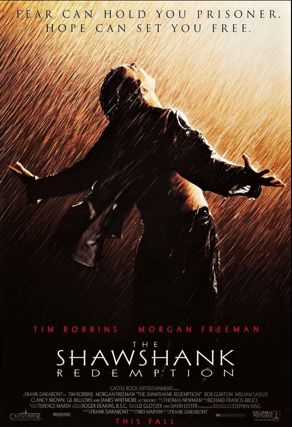
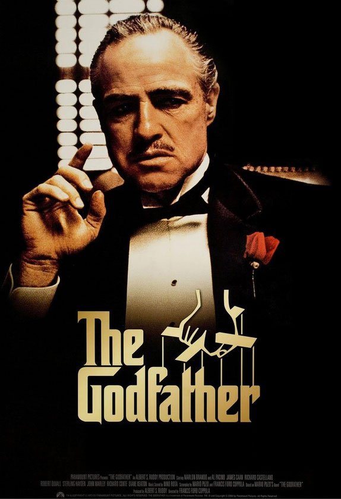

IMDb Top 250 Movies
1. Τελευταία έξοδος: Rita Hayworth
Over the course of several years, two convicts form a friendship, seeking consolation and, eventually, redemption through basic compassion.
- Director: Frank Darabont
- Writers: Stephen King, Frank Darabont
- Stars: Tim Robbins, Morgan Freeman, Bob Gunton

2. Ο νονός
The aging patriarch of an organized crime dynasty transfers control of his clandestine empire to his reluctant son.
- Director: Francis Ford Coppola
- Writers: Mario Puzo, Francis Ford Coppola
- Stars: Marlon Brando, Al Pacino, James Caan
Μέχρι το 10
- Ο σκοτεινός ιππότης
- Ο νονός, μέρος 2ο
- Οι 12 ένορκοι
- Η λίστα του Σίντλερ
- Ο άρχοντας των δαχτυλιδιών: Η επιστροφή του βασιλιά
- Pulp Fiction
- Ο άρχοντας των δαχτυλιδιών: Η συντροφιά του δαχτυλιδιού
- Ο καλός, ο κακός και ο άσχημος
Ετικέτες: Δράμα περιπέτεια Θρίλερ Δράση κωμωδία